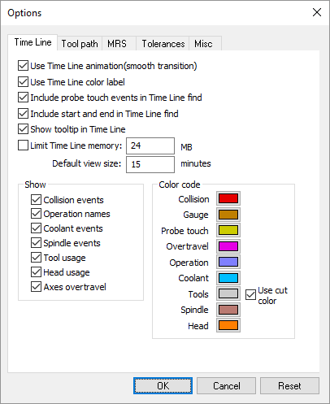

Simulation»Options (Ctrl Alt O)
Activates the Simulation Options dialog, which defines various settings used in the simulation. Options are organized by Time Line, Tool Path, MRS (i.e., material removal simulation), Tolerance and Miscellaneous tab pages.
{kind=link}
Time Line Options
These options control the behavior, display and contents of the Time Line window.
Use Time Line animation when set causes the Time Line window to smoothly interpolate when changing the time-scale or when using F3, Shift F3 or the Synchronize feature to jump from one moment in time to another.
Use Time Line color label when set causes the Time Line window labels to be shown in various colors depending on the type of data. Clear this checkbox to have labels appear in a uniform high contrast color.
Include probe touch events in Time Line find affects the behavior of the F3 and Shift F3 search function in the Time Line window. When set, searching for collisions will stop at probe touch events. When the checkbox is cleared, probe events are ignored for search purposes.
Include start and end in Time Line find affects the behavior of the F3 and Shift F3 search function in the Time Line window. When set, searching forward past the last event of the type being searched will position to the end of the Time Line window; searching backwards before the first event will position to the start of the Time Line window. When the checkbox is cleared, attempts to search beyond the last (or before the first) event will result in no action.
Show tooltip in Time Line when set enables the display of tooltips, which describe events of interest under the cursor (e.g., collision, tool…). Tooltips identify the start and ending time of the event as well as other pertinent information.
Limit Time Line memory and its associated input field can be used to avoid out-of-memory conditions on very large programs. If set, the Time Line window will only use the specified amount of memory to track the events of the model. Once the limit has been reached, events earlier in the program will no longer be accessible via the Time Line window.
Default view size sets the minimum width (in minutes) of the Time Line display at the start of a new process.
The Show checkboxes list the types of information desired in the Time Line window. This can also be done in the Time Line window itself, using the right-mouse button context menu.
Color code controls define the color to use for the horizontal bars in the Time Line window. A “Use cut color” setting for Tools will use the same color in the Time Line as is used for material removal simulation on the in-process stock.
{kind=link}
Tool Path Options
These options control the display of the tool path trace in the simulation window. The trace appears as a thin line, with different colors representing interpolation and positioning. Many of the tool path options can be also be controlled from the Tool Path toolbar.
Show tool path trace shows or hides tool-path tracing.
Show tool vector shows or hides tracing of the tool-axis vector when tool path tracing is active.
When the Use overlay checkbox is selected, the tool path trace will not be hidden by objects that might be between you (the viewer) and the tool path.
Tool tip and SCP trace settings selects whether the trace will be drawn at the tool tip or at the spindle control point (SCP). Tooling must have a length to see a difference between the tool-tip and SCP traces. This setting has no effect on a tool path that is already drawn.
Mode settings select the extent of the tool path trace.
Up to current time: Traces the entire tool path from the start of the program.
seconds: Traces the tool path for the specified last number of seconds.
tool changes: Traces the tool path for the specified last number of tool changes.
operations: Traces the tool path for the specified last number of operations.
Tool path trace mode settings are also available from the VM Tool Path toolbar. Clear the 3 rightmost toggles to trace the entire tool path from the start of the program.
Motion style settings provide the ability to set the color, line style and line width of tool path traces for various types of motions.
Tool vector settings provide the ability to set the color, line style and line width of the tool axis vector trace.
{kind=link}
{kind=link}
MRS Options
These options provide control over the in-process stock; functionality that requires a Material Removal Simulation (MRS) license[1].
In-process stock checkpoints settings control the visualization of the in-process stock when moving Time Line backwards and forwards. If checkpoints are enabled and Simulation»Show»Filters»Stock Checkpoints is toggled on, then the in-process stock will update to show its state at earlier moments in time when moving Time Line backwards and forwards. The frequency of checkpoints can be controlled as follows:
At each tool change: Creates a checkpoint at every tool change.
At each operation: Creates a checkpoint at the start of every operation.
Periodically during long cutting sequences: Creates a checkpoint after the specified number of motions have been processed.
Flute length optimization settings control the analysis and reporting of optimal tool flute lengths during the simulation. If active, the defined and maximum required flute lengths will be reported in the listing file at the end of GENER processing.
On: Enables flute length optimization.
Off: Disables flute length optimization.
Automatic: Flute length optimization is under control of the GENER ADAPTV/DEPTH command and of the $FMSADPT('DEPTH') macro function (see the “Virtual Machine Users Guide”).
Extra body length: For ON only, specifies an extended flute length to use for analysis purposes. The maximum detectable flute length is the sum of the actual flute length and this value.
Automatic chip removal settings control the automatic removal of disconnected in-process stock chips (i.e., fragments) during the simulation.
Remove chips not intersecting the design: When the in-process stock is fragmented, independent fragments that do not intersect the part are removed.
Remove chips with volume less than: When the in-process stock is fragmented, independent fragments with a volume less than the specified amount are removed.
Plane offset step size sets the amount to offset the cross section plane when selecting Push Plane or Pull Plane on the Cross Section toolbar.
{kind=link}
Tolerance Options
Define tolerance using specifies the units of measure for all tolerance values listed.
Gouge tolerance specifies an acceptable collision tolerance between the cutting portion of the tool and the part model. Some gouging is to be expected, which is normally a function of the manufacturing tolerance used by the CAM system. When the Material Removal Simulation (MRS) license option is enabled, the gouge tolerance also defines the cutting tolerance to use when computing the in-process stock. The actual cutting tolerance used is a function of the gouge tolerance and tool usage (see tool “Usage” description).
Collision tolerance specifies the accuracy in space of the beginning and end of a collision event between two objects.
Faceting tolerance specifies the accuracy of mesh objects generated at run-time from swept profiles. A tighter tolerance produces more accurate results, but at the cost of increased memory and CPU. One of the key uses of the faceting tolerance is in the generation of 3D tooling given either a 2D profile or tool definition parameters (i.e., diameter, corner radius, length…).
Tool path resolution defines the tolerance to use when approximating curved motions by short straight-line segments.
{kind=link}
Miscellaneous Options
Rendering settings affect the simulation graphic quality. This has no effect on collision and overtravel checking. The settings are dependent upon the computer’s GPU.
Animation control settings affect the simulation display speed.
Continuous: Select this method to slow the simulation down to some Scale factor of real time (within the limitations of the CPU and graphics capabilities of your computer). Select Motion Step during Tool Change to speed up the animation of tool changes.
Motion Step: Select this method to update the Virtual Machine window at the endpoint of every Step Size motions.
Time Interval: Select this method to only update the Virtual Machine window at a set Interval in seconds. This method has the least impact in terms of CPU requirements.
Animation control settings are also available from the VM Animation toolbar. When in continuous animation mode, extremely slow motions may give the impression that the software is no longer operating. If unsure, activate the HUD motion display, which will show if axes are in fact moving. Animation control settings can be changed while the simulation is running (and even mid interpolation).
World background color setting control the underlying color of all simulation windows.
Use gradient can be selected to use a two-color smooth gradient background.
Top defines the background color if gradient fill is not selected, or the color to use at the upper edge of the simulation windows when using a gradient fill background.
Bottom defines the color to use at the lower edge of the simulation windows when using a gradient fill background.
Backface settings control how the backside of a surface should be shown. VM uses a mesh of triangles to represent objects. Each triangle has a concept of in and out, which is used in the drawing process to correctly color and shade the triangle. When an object is viewed from the inside looking out, VM provides the following choices on how the backside surface should be displayed:
Wireframe: An object’s surface will be drawn in wireframe mode when viewed from the inside. This setting may result in faint lines appearing at the edges of objects. Some graphic cards exhibit poor performance in this mode.
Solid: An object’s surface will be drawn as a solid when viewed from the inside (this setting is only valid when not in Simulation»Show»Wireframe mode).
Hidden: An object’s surface will be hidden when viewed from the inside.
{kind=link}
Miscellaneous settings include the following:
Use 3D construction positioning controls the operation of the left-mouse button when constructing objects. When set, it takes two mouse clicks to define a point in space: the first defines the XY location and the second defines the Z. When the 3D checkbox is clear, the first mouse-click defines the XYZ coordinates.
Default to Look-Around camera sets the default mode of camera rotation. When set, camera rotation by default rotates around the current camera position (like turning your head) and the Shift key must be pressed to rotate around a point in space in front of the camera. When this checkbox is clear, the default is the reverse. The camera will rotate around a point in space in front of the camera and the Shift key will cause the camera to rotate around the current position.
Use camera animation when set causes the camera to smoothly interpolate between any two user-defined viewpoints sharing the same type (i.e., perspective vs. orthogonal). When this checkbox is cleared, the camera jumps directly to each new viewpoint.
Default to Camera mode sets the default functionality of the left-mouse button. When set, the default is “Camera” mode; meaning that the left-mouse button controls the orientation of the camera and the Ctrl key must be held down to select objects. When this checkbox is clear, the default is “Selection” mode; meaning that the left-mouse button is used to select objects and the Ctrl key must be held down to orient the camera.The Camera and Selection mode defaults can also be set using the camera and pointer buttons on the VM Mode toolbar.
Enable $FMSCMRA and CAMERA pp command when set allows the active simulation window viewpoint to be changed under program control, using the CAMERA post-processor command (GENER only) or the Virtual Machine $FMSCMRA macro function. Clear this checkbox to inhibit viewpoint changes under program control.
Show collision interference when set will dynamically show, as a yellow line, the intersection between colliding objects. Computing the intersection takes considerably more CPU than simply detecting if a collision has occurred. You can disable the viewing of collision interference if you encounter unacceptable performance with colliding objects on complex scenes.
The Video Options button calls up a Video Compression dialog listing the various Compressor methods that can be used for recording the contents of the active simulation window when selecting the Simulation»Annotation»Record menu function. These compressor methods, called “codecs” (short for compressor/decompressor), use various techniques to reduce the size of the final recording file. Links to a selection of codecs that have been tested by the ICAM Support team can be found on the customer portal section of the ICAM web site.
Mouse Scheme overrides Virtual Machine’s default selection, panning, rotation and zoom features (called “ICAM Classic”) and uses instead the mouse and keyboard controls of the selected CAM system. The “ICAM 3DM” scheme is designed for use with a 3D mouse; it supports unrestricted view rotation and pans the model instead of the camera.